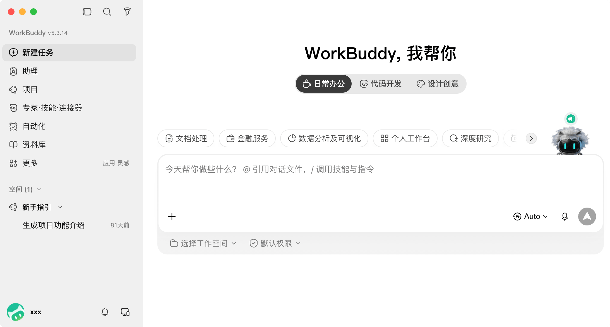
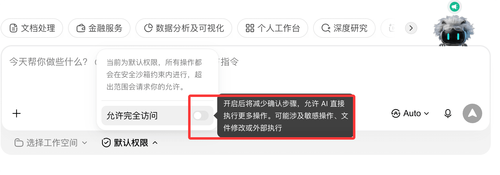
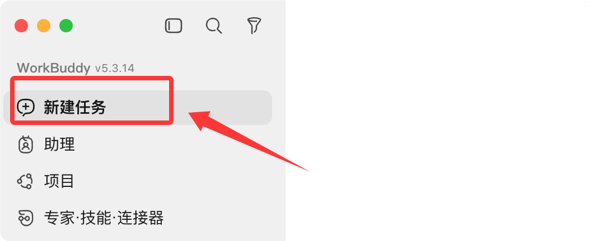
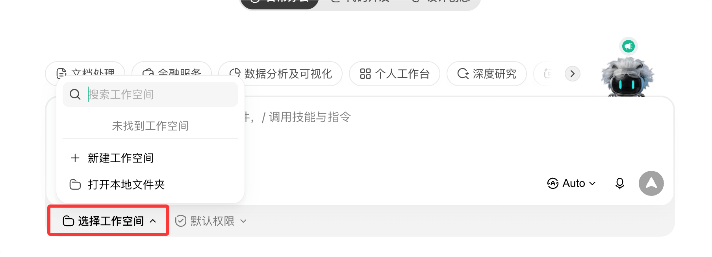
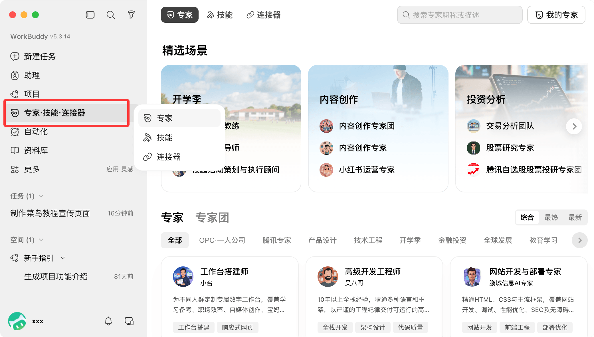
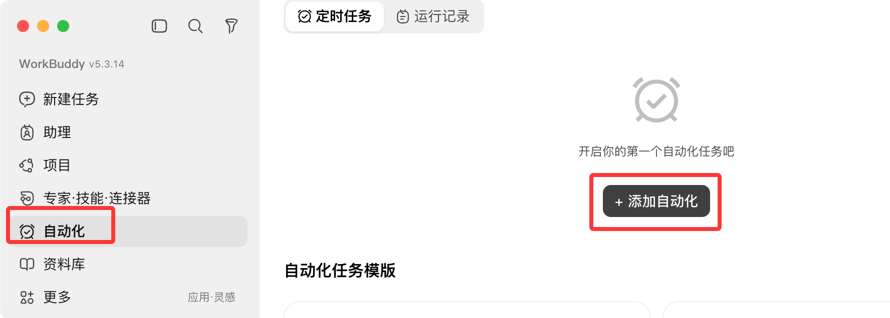

WorkBuddy 入门教程
WorkBuddy 是腾讯云出品的全场景 AI 办公工作台，一句话下达任务，自动拆解、规划并执行，交付可直接验收的成果文件。
与只会聊天的传统 AI 不同，WorkBuddy 能直接操作你电脑上的文件，真正替你干活。
核心工作流程
WorkBuddy 处理一个任务会经历拆解、规划、执行、交付四个阶段，全程不需要你手动操作文件。
一句话需求 到 交付成果 之间，WorkBuddy 会读取授权的文件夹、生成中间文件、运行必要的脚本，整个过程在对话区实时可见。
与传统 AI 对话的区别
理解 WorkBuddy，最直接的方式是把它和平时用过的 AI 聊天工具做对比。
| 对比维度 | 传统 AI 对话 | WorkBuddy |
|---|---|---|
| 能力定位 | 只能对话，提供建议 | 能够实际执行任务 |
| 文件处理 | 需要你手动操作文件 | 自动读写本地文件 |
| 任务复杂度 | 单步骤简单问答 | 多步骤复杂任务 |
| 交付形态 | 输出文字回复 | 交付可验收的成果（文档 / 表格 / PPT / 网页） |
定位差异：传统 AI 是「顾问」，负责给建议；WorkBuddy 是「同事」，负责把活干完。
三种工作模式
创建任务时需要选择工作模式。WorkBuddy 内置三种模式，对应不同的任务性质与积分消耗。
| 模式 | 行为 | 适用场景 | 积分消耗 |
|---|---|---|---|
| Ask 问一问 | 只看不改，纯问答，不读写文件 | 查资料、咨询方案、分析文档 | 最少 |
| Plan 想一想 | 先给出分步执行方案，你确认后才动手 | 多步骤复杂任务、重要报表与合同 | 适中 |
| Craft 做一做 | 直接执行，读写文件产出成果 | 目标明确的生成与修改任务 | 较高 |
新手提醒：WorkBuddy 默认使用 Craft 模式，随手发一条消息就会直接开干并消耗积分。
如果只是想聊天问问题，记得先切到 Ask 模式。
模式选择建议
简单问答用 Ask，复杂或高风险任务先用 Plan 看方案，目标明确的活交给 Craft 直接干。
拿不准时，默认选 Craft 即可；熟练后你会发现，选对模式既是效率问题，也是积分消耗问题。
安装与登录
WorkBuddy 的安装全程无需命令行，也不需要配置任何环境，几分钟即可完成。
系统要求
安装前先对照下表确认电脑满足要求。
| 项目 | 要求 |
|---|---|
| 操作系统 | Windows 10 及以上，或 macOS 12（Monterey）及以上 |
| Mac 芯片 | M 系列芯片选 Mac ARM64，Intel 芯片选 Mac X64 |
| 内存 | 最低 4 GB，推荐 8 GB 以上 |
| 网络 | 需要联网调用 AI 模型服务 |
查看芯片型号：点击屏幕左上角苹果图标，选择「关于本机」即可看到。
下载与安装
访问 WorkBuddy 官网，点击「下载 WorkBuddy」获取对应系统的安装包。

Windows 安装步骤：
双击安装包，勾选「我同意此协议」，选择安装路径（默认即可），勾选「创建桌面快捷方式」，点击「安装」等待完成。
若安装过程被安全软件拦截，可先关闭第三方杀毒软件再重试，自动化模块偶尔会被误判。
macOS 安装步骤：
双击下载的 .dmg 磁盘映像，把 WorkBuddy 图标拖入「应用程序」文件夹。
首次启动若提示「无法验证开发者」，需在系统设置中允许打开。
登录账号
启动 WorkBuddy，点击「登录」，勾选《服务条款》与《隐私协议》，使用微信扫码即可完成登录。
也支持企业微信、QQ、手机号、腾讯云账号等方式登录，推荐微信，方便后续联动小程序与微信助理。

登录完成后，界面如下：

文件夹授权
首次使用，WorkBuddy 会请求访问本地文件夹，这是它能帮你操作文件的前提。

安全原则：最小授权。只授权桌面、文档、下载等必要的工作目录，不要全盘授权，更不要授权含密码、密钥的目录。
未授权的目录 WorkBuddy 无法读取；系统敏感目录会被自动拦截，高危操作需要二次确认。
领取新手福利
新用户注册后可领取积分礼包，在左下角头像进入「个人中心」查看与领取。
每日签到也能获得积分，连续签到 7 天有周礼包奖励。积分用于调用模型服务，Ask 模式消耗最少。
界面认识
登录后，WorkBuddy 主界面分为三大区域，理解了它们就等于理解了整个产品。
| 区域 | 功能 | 要点 |
|---|---|---|
| ① 侧边栏 | 任务列表、新建任务、技能、专家、连接器、自动化入口 | 按文件夹分组管理任务，底部是头像与设置 |
| ② 对话区 | 输入需求、查看执行过程、持续追问 | 支持拖拽上传文件、@ 引用文件、粘贴截图 |
| ③ 结果区 | 查看交付文件、网页预览、变更记录 | 产物可预览、分享或上传到云端 |

侧边栏还聚合了 Claw 远程控制、专家中心、技能市场、自动化任务等进阶入口，后文会逐一介绍。
结果区是验收成果的地方：生成的 Word、Excel、PPT 都在「产物」中查看，网页类成果可在内置浏览器中实时预览。

快速上手：创建第一个任务
跑通一个真实任务，比读十页说明书更有用。下面五步，带你完成第一个交付。
第一步：新建任务
回到主界面，点击「新建任务」开始创建 PC 端任务。
手机端发送的任务，可以在「助理」中查看。

第二步：选择工作空间
点击输入框左下角「选择工作空间」，指定任务使用的工作目录。
建议固定用一个文件夹长期沉淀工作上下文，这样成果好找，AI 对你的背景也越用越熟。

第三步：描述任务
在对话框中用一句话描述你的要求，建议一次说清「目标 + 输入 + 输出格式 + 约束」四个要素。
制作一个 WWW.RUNOOB.COM 网站的宣传页面，HTML格式即可
描述越具体，交付质量越高，返工越少。
第四步：开始执行
点击「发送」，WorkBuddy 开始自主拆解任务、规划步骤并执行。
左侧对话区会实时展示执行过程与阶段说明，你可以随时观察进度，类似下面的执行日志。

第五步：查看结果
打开右侧窗口查看任务结果，生成的交付文件在「产物」中查看，中间文件在「工作空间文件」中查看。
不满意就继续追问，它会基于已有上下文修改，无需从头再来。
核心心法：「你说需求，它交成果」——中途不必盯着，跑完来验收即可。
需求描述技巧
给 AI 下需求，和人沟通一样：说得越清楚，对方干得越准。
一次合格的需求描述，通常包含以下四个要素。
| 要素 | 含义 | 示例 |
|---|---|---|
| 目标 | 要生成什么 / 处理什么文件 | 生成一份销售复盘报告 |
| 输入 | 需要分析的数据、参考文档在哪里 | 读取桌面「销售数据.xlsx」 |
| 输出格式 | Word / Excel / PPT / 网页，多长，什么风格 | 输出 Word 文档，商务风格 |
| 约束 | 范围、篇幅、截止时间等限制 | 2000 字左右，今天 18 点前完成 |
模糊与清晰的对比
模糊需求得到模糊结果，清晰需求才能得到精准交付，这是最值得记住的一条经验。
| 类型 | 说法 | 结果 |
|---|---|---|
| 模糊 | 帮我写个总结 | 不知道写什么、写给谁、要什么格式 |
| 清晰 | 基于附件 3 份会议纪要，整理一份 2000 字左右的会议总结，分「决定事项 / 待办 / 风险」三部分，输出 Word | 一次成型，基本不用改 |
给 AI 下需求时，优先把文件拖拽上传到输入框，而不是只写文件路径，可以避免识别出错。
常用示例
下面六个高频办公场景，直接照搬指令即可使用。
文件夹智能整理
把散乱的文件按类型分类归档，重名文件自动加前缀避免覆盖。
把桌面「待归档」中的文件按类型分入 文档 / 图片 / 表格 三个文件夹，重名文件自动加前缀避免覆盖
执行完成后会给出变更清单，每一条移动与重命名都可追溯。
周报一键生成
基于工作记录数据，自动汇总并按项目维度生成结构化周报。
读取桌面「工作周记.xlsx」的任务记录，重点标注 runoob 项目的进展，按项目汇总本周完成情况，生成周报（本周总结 / 问题与风险 / 下周计划），输出 Word 文档
从读取数据到排版成稿，通常 1 到 2 分钟，传统手写需要半小时以上。
Excel 清洗与可视化
清洗混乱的销售数据：去重、统一格式、汇总、标异常，并生成图表。
读取「RUNOOB销售数据.xlsx」，按订单号列去重，按月份汇总各区域销售额，生成柱状图，输出新的 Excel 文件
几万行数据的处理通常在 1 分钟以内完成，省去大量手工操作。
PPT 一键生成
从需求描述直接生成演示文稿，自动排版为商务风格。
根据这份销售数据生成 8 页月度汇报 PPT，商务风格，逻辑清晰，标题醒目
几分钟出初稿，之后可以继续追问「第三页改成一页两图」「把字体调大一点」等细节。
发票信息提取
批量读取发票截图，提取关键字段，整理成可报销的 Excel 表格。
读取文件夹中的 30 张发票截图，提取日期、金额、税号，整理成 Excel，信息不确定的标黄
批量提取只需几十秒，无法确认的信息会自动标记出来，方便人工复核。
定时自动化任务
用自然语言设置定时任务，到点自动执行，成果可推送到手机。
每天早上 9 点读取今日计划，生成优先级清单，推送到我的微信
支持每日 / 每周 / 每月 / 一次性多种周期，配置后无需守着电脑。
进阶能力
跑通基础任务后，下面这四个能力能让效率再上一个台阶，点击左侧栏专家菜单查看：

技能 Skills
技能是把高频长指令、固定流程打包成的「操作手册」，适合周报生成、数据清洗、格式转换等重复工作。
在输入框打 / 可快速调用已安装的技能，也可以直接说「帮我找一个做周报的技能」，自动搜索技能市场安装。
技能还支持自建：把一段稳定的工作流保存下来，下次一键复用。
专家 Experts
专家是封装了专业领域流程的 AI 智能体，覆盖技术开发、产品设计、数据分析等方向。
给任务加一个「领域人设」后，术语更准、产出更贴合行业惯例，相当于请了一位对口顾问。
复杂任务还可以组建「专家团」，多角色分工协作、并行执行、汇总交付。
连接器 Connectors
连接器把外部服务接进 WorkBuddy，底层协议是 MCP（Model Context Protocol）。
目前已支持腾讯文档、QQ 邮箱、GitHub、Notion、高德地图等 30 多个连接器。
授权后可以直接说「把我刚才的报告存到腾讯文档」「拉一下沪深300近一月走势画张图」，数据、图表、结论一次到位。
定时自动化与移动端
新建任务时选择定时模式，一句话即可设置自动化，例如每天早上抓取行业新闻摘要。


WorkBuddy 支持微信小程序 / App、微信助理、企微助理、QQ 机器人、飞书、钉钉机器人等移动端入口。
配置 Claw 远程控制后，还可以用手机微信远程操控电脑执行任务，地铁上发条消息，到公司成果已经躺桌面。

注意：定时任务需要 WorkBuddy 客户端保持运行；远程操控时，电脑端也需开机联网，且只能访问已授权的文件夹。
模型切换
WorkBuddy 内置多款大模型，可根据任务类型灵活切换。
| 模型 | 特点 | 建议场景 |
|---|---|---|
| 混元 | 腾讯自研，综合表现均衡 | 日常办公 |
| DeepSeek | 逻辑推理与代码能力强 | 代码开发、逻辑分析 |
| Kimi | 长文本处理能力突出 | 长文档理解、提炼 |
| GLM / MiniMax | 通用能力，消耗较低 | 简单任务、省积分 |
拿不准时选择 Auto 自动模式，由系统按任务类型推荐模型。
不同模型的积分消耗不同，简单任务切到轻量模型，消耗只有深度推理模型的三分之一。
自定义模型可以通过设置菜单，选择模型来设置：

选择模型菜单，在下拉菜单设置自定义模型：

常见问题
WorkBuddy 需要联网吗？
需要。AI 模型服务通过网络调用，请保持网络连接稳定。
但你的文件处理默认在本地完成，原始数据不上传云端，服务端只处理数据片段、用后即弃。
它能访问我电脑上的所有文件吗？
不能。WorkBuddy 只能访问你主动勾选授权的文件夹，系统敏感目录会自动拦截，高危操作需要二次确认。
任务执行到一半能停下吗？
可以。执行中的任务可随时「停止」，中断后可以补充说明、调整需求重新发送，或基于已有内容继续推进。
上传文件失败怎么办？
先检查文件格式是否受支持，大文件可先压缩或拆分再上传，若持续失败建议检查网络连接。
生成的成果怎么分享给别人？
对话区顶部「分享任务」可以生成公开链接；结果区的产物文件也有分享入口。
还可以上传到云端，在腾讯文档、网盘等多端同步查看。
积分不够用怎么办？
纯查资料用 Ask 模式最省积分，简单任务切轻量模型；日常坚持签到，新用户记得先领注册礼包。
最后提醒：WorkBuddy 上手的关键不是背功能，而是把「目标 + 输入 + 输出格式 + 约束」四个要素一次说清。
从一个小任务开始，跑通第一次「说需求、看成果」的循环，剩下的功能都会自然串起来。

点我分享笔记